Arvioitava laboratorioharjoitus - KurssiKuru Oy (HARJOITUS)
Valitsin Labra
Alkupräinen tehtävänanto tiivistettynä:
- Haluamme tehdä PHP-kotisivuja etäältä - Kurssilla olemme harjoitelleet Djangoa (python), joten korvasin PHPn Djangon asennuksella. Lisäksi toivottiin etähallintaa joten ssh tulee olla asennettuna.
- Käyttäjäkohtaiset kotisivut (localhost/~[käyttäjänimi])
- Anna yhdelle käyttäjälle (Maija) sudo - oikeudet
- Luo yhdelle käyttäjällä (Jorma) sleep.example.com kotisivu
- Luo metapaketti "kurssiguru-goding", joka sisältää git, ipyhton, meld ja gedit ohjelmat.
Aluksi
Päivitin metadatan komennolla sudo apt-get update. Apache minulla oli jo asennettuna, mutta sen saisi komennolla sudo apt-get install apache2
Seuraavaksi muutin apache testisivun - echo "KurssiKuru" | sudo tee /var/www/html/index.html
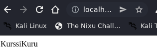Seuraavaksi loin käyttäjäkohtaiset testisivut käyttäjille:
En ollut varma miten VirtualHost asetukset menevät joten loin kaksi ensimmäistä käyttäjää ja kokeilin miten virtualhost asetukset mahdollisestin menevät useamman käyttäjän kohdalla.
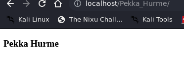Jotta ääkköset tulisivat näkyviin, pitää index.html tiedostoon lisätä merkkiasetukset
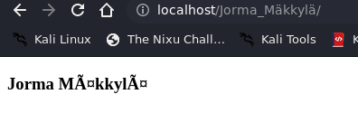Loin siis /home kansioon kurssikuru/kuru/[käyttäjänimi] komennolla sudo mkdir -p kurssikuru/kuru/Jorma_Mäkkylä/, sekä lisäsin index.html johon kirjoitin hieman HTML koodia. Index.html kopion käyttäjältä toiselle cp /tiedostopolku/index.html /tiedostopolku/index.html (Jormalta Pekalle). Jonka jälkeen kävin muokkaamassa virtualhost tiedostoa (kuru.conf) 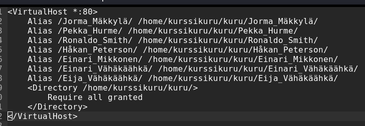Toistin saman muillekin käyttäjille.
Tarkistin ls komennolla onko kaikissa tuo index.html. Kävin vielä muuttamassa käyttäjäkohtaisen index.html otsikot vastaamaan käyttäjää, sekä lisäsin rivin jotta ääköset näkyvät oikein.
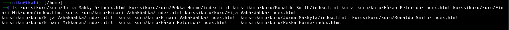Tarkistin vielä cat komenolla onko index.html oikein:
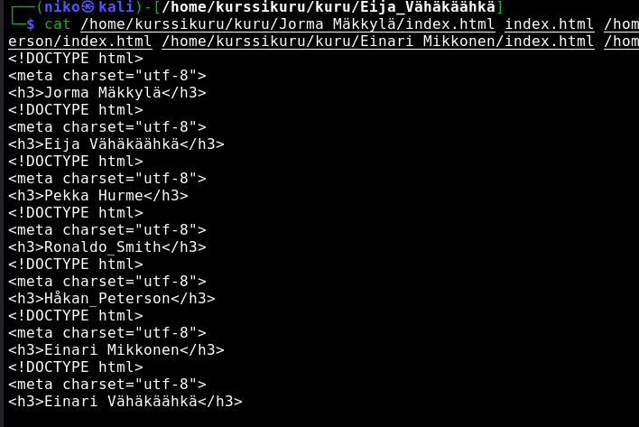localhost/Håkan_Peterson
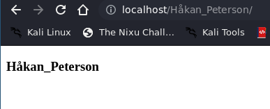Loin kaikille käyttäjille onnistuneesti localhost/[käyttäjänimi]/ testisivyn ja laitoin sivun otsikoksi käyttäjän nimen.
Asiakas halusin myös käyttää palvelinta etänä, joten asensin heille shh palvelun komennolla sudo apt-get install ssh. Nyt he voivat ottaa yhteyttä palvelimeen komennolla ssh [käyttäjänimi]@[pavelimen_ip_osoite]
Käyttäjät saadaan listättyä komennolla adduser [käyttäjänimi]. Tehtävässä Maija Virtanen jäi ylläpitäjäksi, joten hänelle tulee lisätä sudo oikeudet. Se onnistuu komennolla usermod -aG sudo [käyttäjänimi], joka tässä tapauksessa on Maija Virtanen.
Djangon asennus
Seuraavaksi asensin KurssiKuru Oylle Djangon, jonka avulla he voivat luoda itselleen haluamansa nettisivut. Loin Djangoon myös tunnukset kaikille käyttäjille.
Aloitin lataamalla virtualenvin, jotta tiedostot eivät menisi hujanhajan - sudo apt-get -y install virtualenv. Seuraavaksi latasin Djangon virtualeviin - käynnistin virtualenvin source env/bin/activate varmistin että olen oikeiassa directoryssa which pip komennolla.
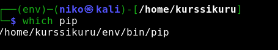Asensin Djangon komennolla pip intall Django==4.0.3
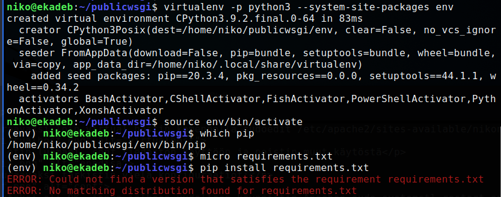Seuraavaksi loin uuden projektin Djangoo komennolla sudo django-admin startproject kurssikuruoy. Jonka jälkeen siirryin muokkaamaan aiemmin luomaani .conf tiedostoa - sudoedit /etc/apache2/sites-available/kuru.conf
/sbin/apache2ctl configtest
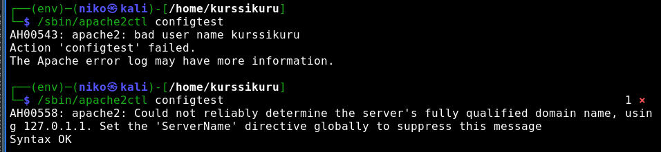Eli .conf tiedoston $USER tulee olla se käyttäjä joka on (tässä tapauksessa olisi) kirjautuneena sisään.
Djangon näyttäisi asentuneen onnistuneesti ja asetuksetkin ovat ilmeisesti kunnossa.
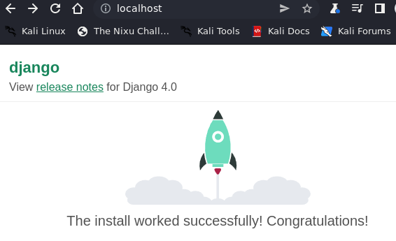Poistin vielä debuggauksen päältä ja lisäsin import os ja STATIC_ROOT = os.path.join(BASE_DIR, 'kuru/'). Tämän jälkeen annoin seurvaat komennot:
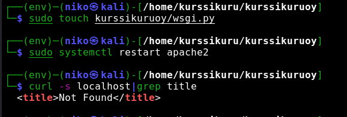Seuraavaksi annoin komennon sudo ./manage.py collectstatic
Asetukset olivat kunnossa niin loin vielä crm KurssiKuru Oylle. Lisäsin myös adminin nimellä Maija. Kirjautuessa sisään sain Server error 500, kävin laittamassa debugin päälle jotta saisin lisää tietoa asiasta.
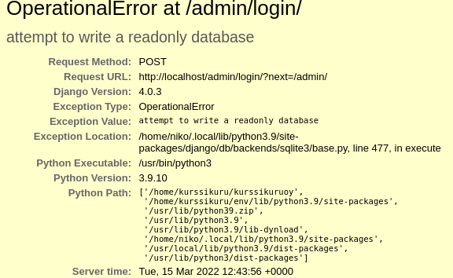Tästä päättelin, että ongelma liittyy jotenkin permission tai ownershippiin. Palasin /home kansioon ja annoin komennon ls -la.
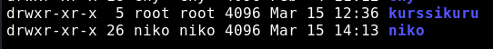kurssikuru kansiolla on root omistaja. Muutin tämän komennolla sudo chown niko:niko kurssikuru
Käynnistin vielä apache2 uudestaan ja kokeilin kirjautua localhost/admin. Server error 500 pysyi ja localhost kadotti Django etusivun. Olin aikeissa kokeilla tuleeko sivu takaisin vaihtamalla oikeudet rootiksi, mutta sitä ennen laitoin vielä debuggauksen päälle ja katsoin onko sanoma vaihtunut. Kävin koskettamassa wsgi.py ja restarttasin apachen niin localhostissa näkyi django etusivu taas. Errori oli edelleen kuitenkin sama, joten kävin katselemassa kurssikuru sisällä olevat kansiot myös.
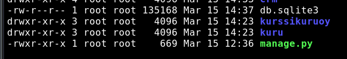Kaikki kansion kurssukuru sisällä oleva oli root:root oikeuksilla. Kokeilin muuttaa nekin komennolla sudo chown -R niko:niko
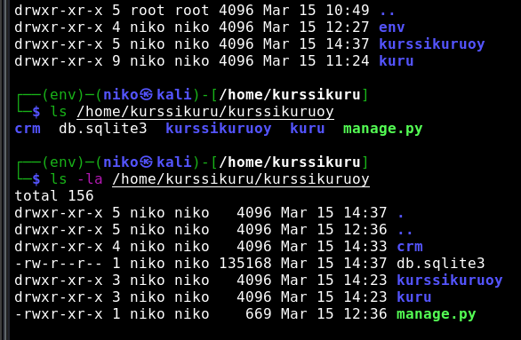Oikeuksien muuton jälkeen kävin vielä koskettamassa settings tiedostoa ja käynnistin apachen uudestaan. Tämän jälkeen kävin kokeilemassa localhost/admin vielä kertaalleen.
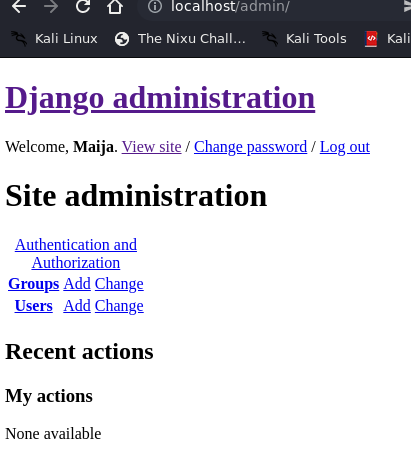Admin sivu lähti toimimaan! Tosin ulkoasu ei ole iha sitä mitä olin ajatellut (mahdollisesti virhe STATIC_ROOT = os.path.join(BASE_DIR, 'kuru/'). Kävin luomassa kuru/ kansioon static/index.html, kävin muuttamassa settings.py tiedostosta STATIC_ROOT -kohdan sekä kuru.conf tiedostoon lisäsin alias static/ [tiedostopolku]. Tämän jälkeen kosketin wsgi.py, annoin komennon ./manage.py collectstatic ja restarttasin apache2. Tämä ei kuitenkaan muuttanut tilannetta mihinkään suuntaan.
Yhteenveto
Valitsin sellaisen tehtävän, joka olisi mahdollisimman lähellä mitä olimme kurssilla harjoitelleet. Onnistuin luomaan HTML testisivut 7 eri käyttäjälle. Onnistuin asentamaan Djangon (production install), luomaan crm appsin ja lisäämään siihen käyttäjät. Onnistuin troubleshoottaamaan Server 500 errorin ja kirjautumaan admin tunnuksilla sisään. Sivun tyyli jäi alkeelliseksi, mutta olipahan nopeampi. Jätin metapaketin tekemisen viimeiseksi ja oli tarkoitus harjoitella sekin, mutta aika loppui kesken. Loin linuxiin käyttäjiä, kansioita, muutin oikeuksia, käytin onnistuneesti ls, cp, mv -komentoja ja tulkitsin virheilmoituksia. Selvitin myös mikä minulla oli vikana parin viikon takaisessa H5 tehtävässä, jossa asennettiin Django vuokratulle palvelimelle (.conf tiedostossa virheellisesti VirtualHost x2). Tämä oli viimeinen harjoitus ennen loppukoetta.
Apuna tehtävässä käytin: